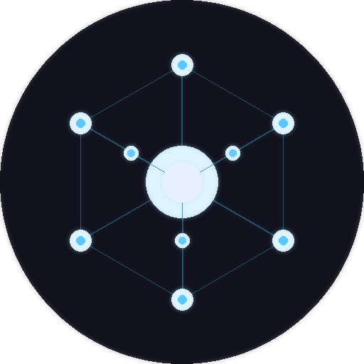

Claude WorksNon-blocking, multi-agent Telegram assistant. Self-hosted Docker container. Zero cloud dependencies.
Controller routes tasks by type. Specialist pool: generalist, researcher, coder (4-stage pipeline), memory. ProductOwner decomposes complex goals into parallel subtasks.
Swap backends by changing one config key. Supports direct API calls or any compatible CLI binary in PATH.
Tasks flow through backlog → assigned → in_progress → review → done/failed. Event-driven with asyncio — no polling.
Dark dashboard on port 8080. Nine tabs: Tasks, Messages, Users, Memory, Approvals, Kanban, Tokens, Logs, Knowledge.
INITIALIZE mode on first boot. Clean gate page (logo + one-time token) → config form. All settings in config.db. No file editing required.
Health-check loop with exponential backoff restart. REPAIR mode spawns a diagnostic agent. Telegram alert on failure.
Per-call tracking by agent class and model. Time-series aggregation. Daily and monthly spending limits with downgrade-or-reject policy.
Regex rules intercept agent output for internet access, data deletion, command execution. Approve via Telegram or Web UI.
Drop requirements.local.txt or init.sh in /data to extend the container without rebuilding. All changes logged with timestamps.
git clone https://github.com/mirkofelt/claude-works.git cd claude-works docker compose up -d
On first start the daemon enters INITIALIZE mode.
Open http://localhost:8080 — a clean setup page appears.
Enter the one-time token from stdout, fill in the config form, and save.
All settings are stored in config.db. No files to edit.